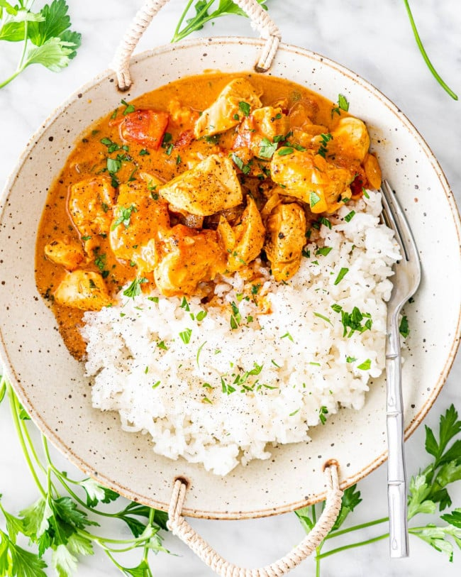

Chicken Curry

Description
This recipe is for Indian Chicken Curry, a dish that features chicken stewed in a tomato-based sauce seasoned with aromatic spices.
The recipe is easy to follow and requires only a few ingredients. The preparation time is 20 minutes and the cooking time is 25 minutes. The recipe yields four servings and can be enjoyed with basmati rice and flatbread.
Ingredients in Chicken Curry
- Chicken Breasts
- Olive oil
- Onion
- Garlic
- Curry powder
- Ground cinnamon
- Paprika
- Bay leaf
- Fresh ginger root
- White sugar
- Salt
- Tomato paste
- Plain yogurt
- Coconut milk
- Lemon juice
- Cayenne pepper
Steps
- Heat olive oil in a skillet over medium heat. Sauté onion until lightly browned.
- Stir in garlic, curry powder, cinnamon, paprika, bay leaf, ginger, sugar, and salt. Continue stirring for 2 minutes.
- Add chicken pieces, tomato paste, yogurt, and coconut milk. Bring to a boil, reduce heat, and simmer for 20 to 25 minutes.
- Remove bay leaf, and stir in lemon juice and cayenne pepper. Simmer 5 more minutes.
- Serve hot and enjoy!